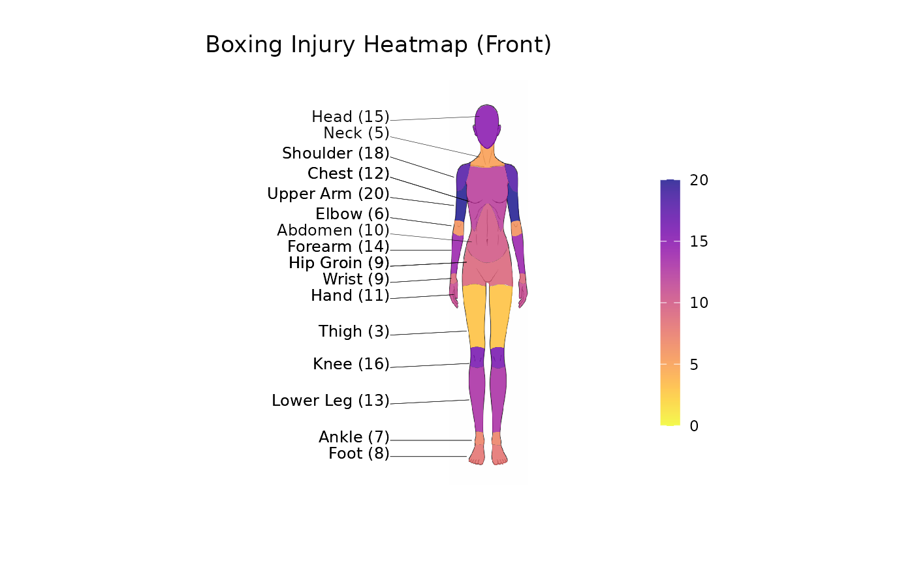

Creates a heat map projected onto a diagram of the human body, based on the number of injuries on body parts visible on the diagram. Diagrams can be viewed from the front, back, or both views
Usage
injury_heatmap(
injury_data,
selected_sport,
view_choice,
sex = c("male", "female"),
palette = NULL,
opacity = 0.8,
show_labels = TRUE,
show_values = TRUE,
show_scale = TRUE
)Arguments
- injury_data
a data frame with the body region, area the injury occurred, and the frequency of the injury
- selected_sport
the name of the sport, corresponding to the header of the frequency column in the data frame.
- view_choice
which view to render the diagram. One of ("front", "back", or "both")
- sex
which body diagram to use:
"male"or"female".- palette
Optional colour palette.
A single palette name supported by
diagram_colours(viridis or HCL), e.g."magma"or"Reds".A character vector of hex colours, e.g.
c("#FFFFFF", "#FF0000").HCL palette names can be listed with
grDevices::hcl.pals().
- opacity
Numeric between
0and1. Opacity of the filled body regions.- show_labels
Logical. If
TRUE, show region names.- show_values
Logical. If
TRUE, show injury values.- show_scale
Logical. If
TRUE, show the colour scale (legend).
See also
diagram_colours to preview supported palette names.
test_colour to visualise palettes.
Examples
Subcategory <- c("Head","Neck","Shoulder","Chest","Upper Arm","Elbow",
"Abdomen","Forearm","Hip Groin","Wrist","Hand",
"Thigh","Knee","Lower Leg","Ankle","Foot","Thoracic Spine","Lumbosacral")
Region.area <- rep("Example", length(Subcategory))
boxing <- c(15, 5, 18, 12, 20, 6, 10, 14, 9, 9, 11, 3, 16, 13, 7, 8, 18, 22)
df <- data.frame(Region.area, Subcategory, boxing)
# Generate a plot for front view, male
p1 <- injury_heatmap(df, "boxing", "front", sex = "male", show_values = FALSE)
# You can customise the colour palette by:
p2 <- injury_heatmap(df, "boxing", "front", sex = "female", palette = "plasma")
# You can add your own plot title by:
p2 + ggplot2::labs(title = "Boxing Injury Heatmap (Front)")
